BigSpider
Data Extraction as a Service
User Guide
DAFTAR ISI
DAFTAR ISI 1
BIGSPIDER 2
Operasional Bigspider 2
Login 2
Media 3
Crawl 3
Taxonomy 4
Menu Media 4
Penambahan Media 4
Searching 6
Actions 7
Menu Crawl 7
Penambahan List Crawl 7
Searching 10
Actions 10
Menu Taxonomy 10
Penambahan Keyword 11
Search dan Filter 12
Actions 13
Refinement Features 13
Pagination 13
Auto Scroll Up 13
Merubah Displaying 14
-
BIGSPIDER
-
Operasional Bigspider
-
Login
-
Akses link/IP address http://172.30.101.63/bigspider/
-
Masukkan username dan password beserta captcha kemudian klik sign in.
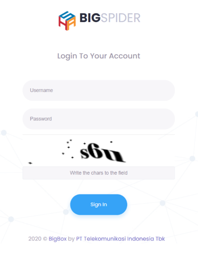
Gambar 1.1
Pilih Menu Big Spider
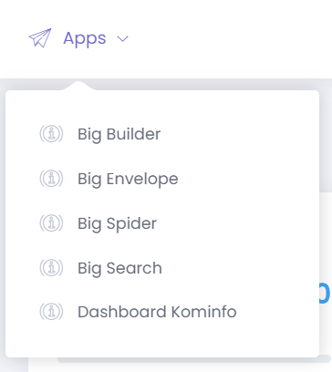
-
Media
Menu media menampilkan list media yang akan digunakan untuk source pengambilan data public.
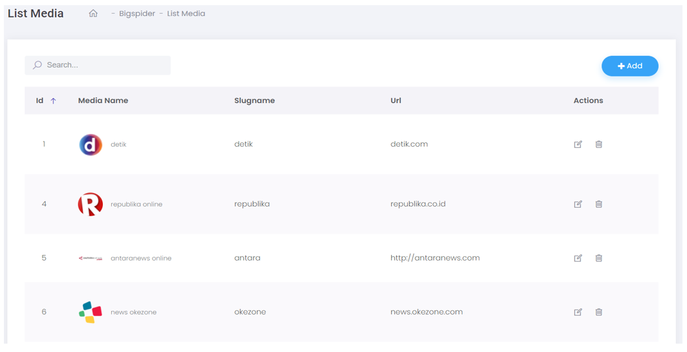
-
Crawl
Menu crawl menampilkan list media yang telah dilakukan pengaturan untuk pengambilan data public (crawling).
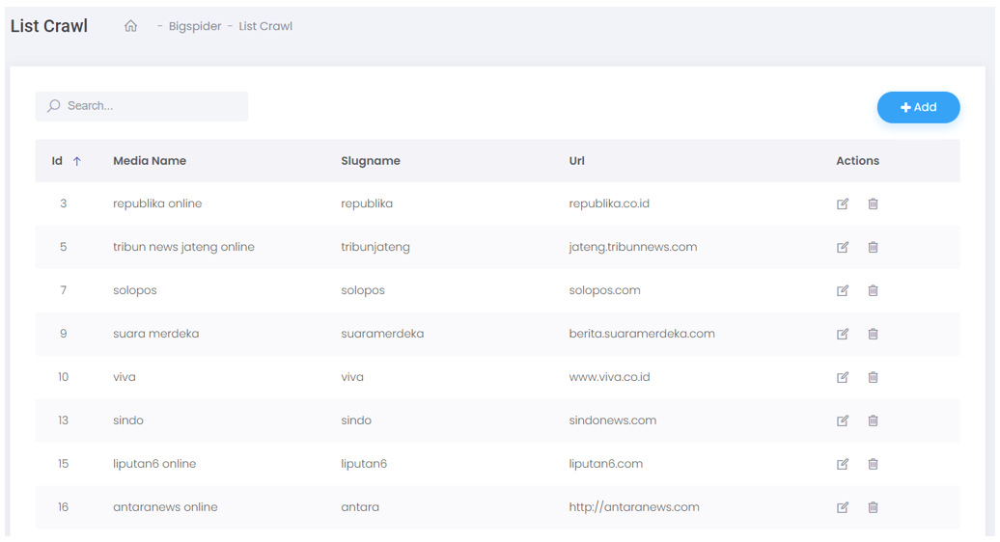
-
Taxonomy
Data yang akan diambil dan ditampilkan pada BigSocial, tentunya harus
meng-input topik dan pengaturan.
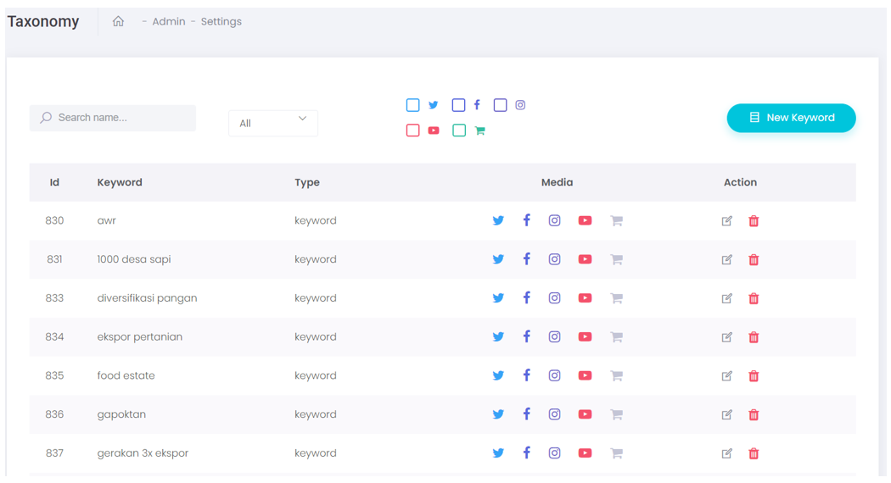
-
Menu Media
-
Penambahan Media
-
Ketika meng-input media baru sebagai source pangambilan data, langkah pertama tentunya harus mengetahui
alamat tujuan (url) media tersebut. Klik button add pada sisi kanan dan mengisi requirement, lalu klik button save untuk menyimpan data media yang akan ditambahkan.
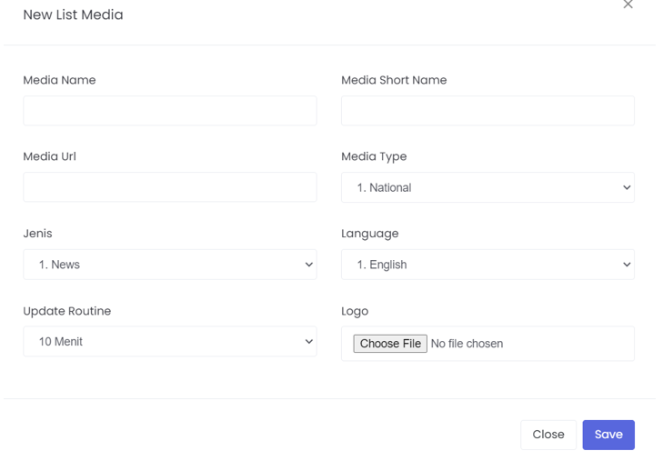
-
Pada requirement isian, ada beberapa data yang akan diisi sebagai berikut :
- Media Name
- Media Short Name
- Media Url
- Media Type
- Jenis
- Language
- Update Routine
- Logo
-
Tampilan pengaturan media existing
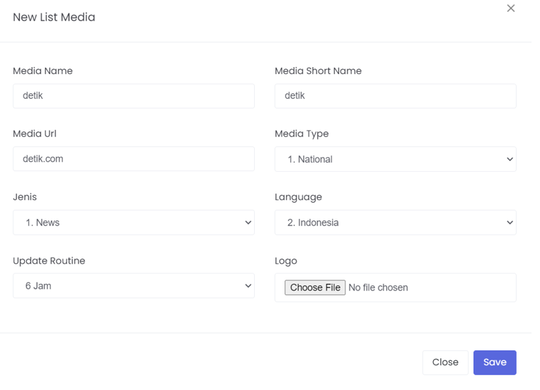
-
Media type, ada 4 pilihan pengaturan yaitu national, local, internasional dan targetted website.
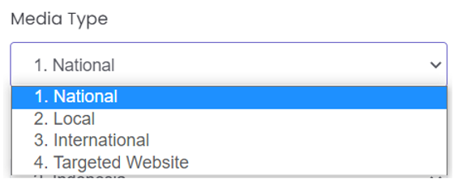
-
Pada pengaturan jenis, akan mengelompokkan media yang akan
ditambahkan masuk ke dalam kategori pada BigSocial yaitu news, forums dan blogs.
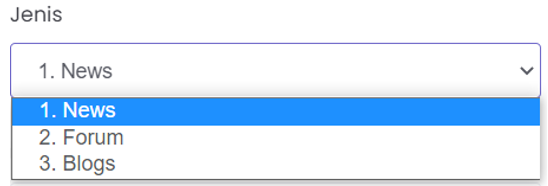
-
Pengaturan language sama halnya dengan pemilihan bahasa pada umumnya. Bahasa yang
akan di crawling oleh BigSpider terhadap media yang akan ditambahkan.
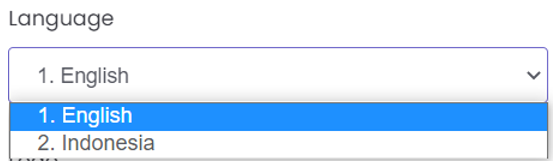
-
Ketika melakukan pengambilan data (crawling), pengaturan waktu pengambilan data dapat diatur dengan menyesuaikan
kebutuhan.
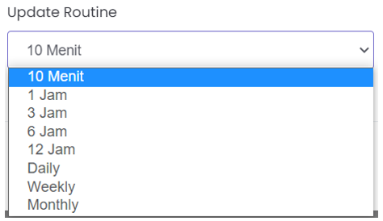
-
Melengkapi pengaturan penambahan media, dapat dilakukan dengan
menambahkan logo dari media terkait.
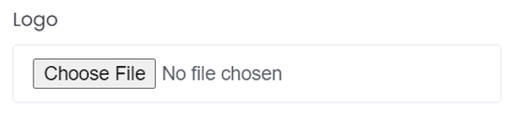
-
Searching
Fitur searching dapat digunakan untuk pencarian media.
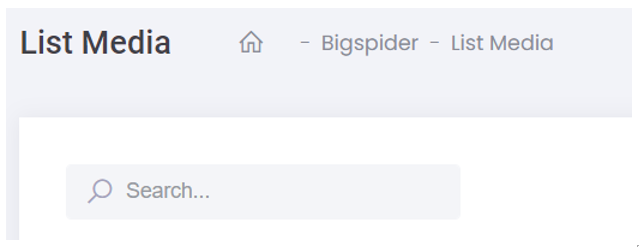
-
Actions
Manajemen list media BigSpider, ada dua fitur yang dapat digunakan dalam
pengaturan media yaitu melakukan edit media dan menghapus list media existing.
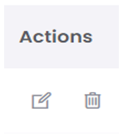
-
Menu Crawl
-
Penambahan List Crawl
-
Ketika melakukan crawling, ada beberapa pengaturan yang harus dilakukan yang dimana harus
membutuhkan pengetahuan terkait HTML dan CSS. Klik button add pada sisi kanan dan mengisi requirement isian, lalu klik button submit untuk menyimpan pengaturan.
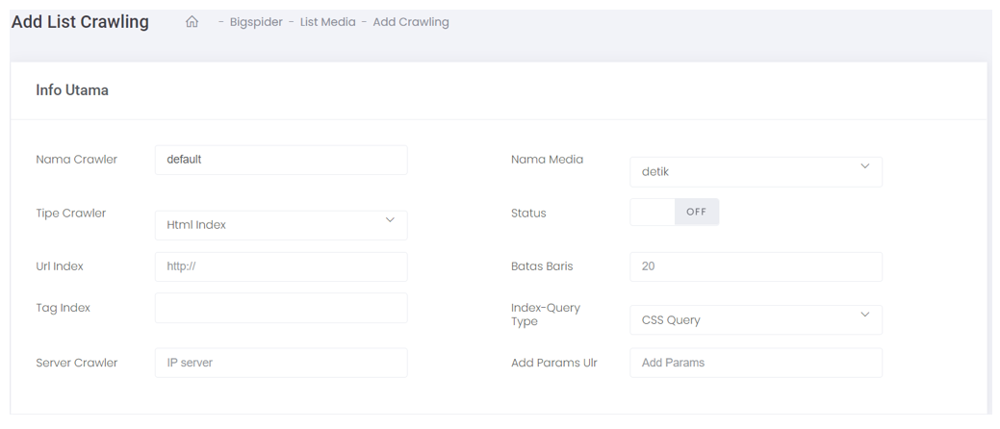
-
Beberapa isian data yang harus dilengkapi, sebagai berikut :
-
Url index, yang harus dilengkapi yaitu alamat website dari media terkait (url)
-
Tag index dilakukan dengan membaca code dari url media terkait (inspecting)
-
Server crawler, alamat IP server yang digunakan untuk melakukan crawling
-
Nama Media, nama media yang akan di crawling
-
Status, untuk mengaktifkan pengaturan yang akan ditambahkan
-
Batas Baris, parameter untuk mengambil jumlah berita
Berikut ini, contoh pengaturan media yang akan di crawling.
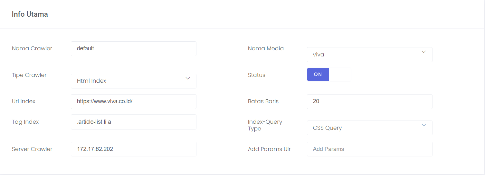
-
Menampilkan data agar lebih detail perlu mengisi requirement isian data yang berada pada menu tag dengan menyesuaikan code pada halaman website media terkait.
-
Judul, untuk menampilkan judul berita/post dari media.
-
Penulis, untuk menampilkan penulis berita/post.
-
Topik, untuk menampilkan topik berita/post.
-
Gambar/icon, untuk menampilkan gambar berita/post.
-
Isi, untuk menampilkan konten berita/post.
-
Format tanggal, menentukan format penulisan tanggal kemudian
disesuaikan dengan penulisan yang ada pada BigSpider.
-
Tanggal, untuk menampilkan keterangan tanggal yang ada pada
berita/post.
Berikut ini, contoh pengaturan yang telah dilakukan.
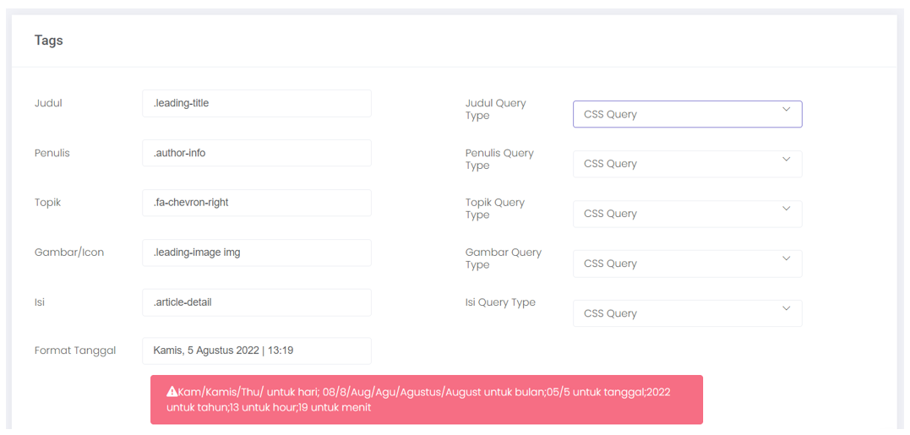
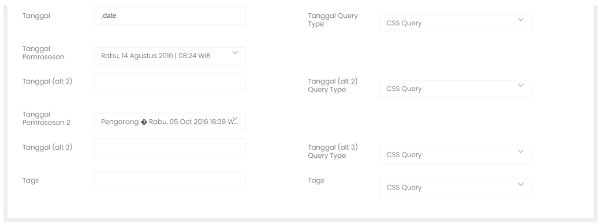
-
Setelah requirement isian data telah diisi, untuk memastikan pengaturan yang telah
berjalan dengan benar dapat dilakukan pengujian tes hasil. Klik button tes yang berada pada sisi bawah, maka secara otomatis sistem akan
mengambil data sesuai dengan pengaturan.
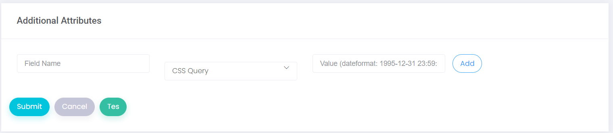
Berikut ini, hasil tes dari pengaturan yang telah dilakukan.
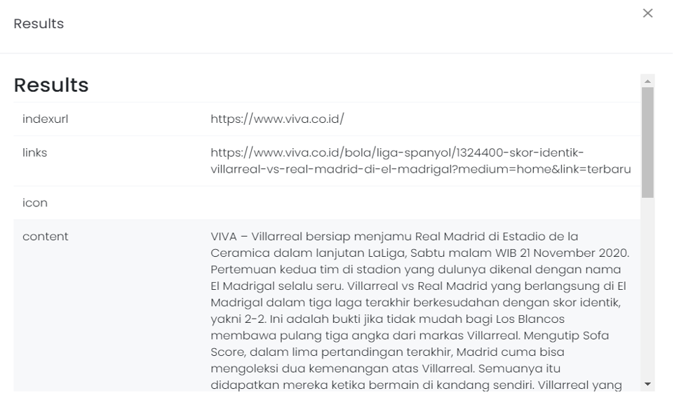
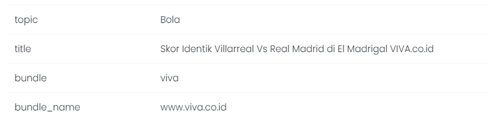
-
Searching
Fitur searching dapat digunakan untuk pencarian media.
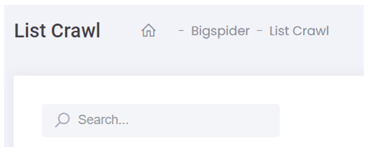
-
Actions
Manajemen list media BigSpider, ada dua fitur yang dapat digunakan dalam pengaturan
media yaitu melakukan Edit Media dan menghapus list Media existing.
-
Menu Taxonomy
-
Penambahan Keyword
-
Pengambilan data yang dilakukan oleh BigSpider berdasarkan topik yang
telah ditentukan. Ketika menambahkan topik dalam pengambilan data klik button new keyword yang berada pada sisi kanan atas.
-
Isi requirement, lalu klik button submit untuk menyimpan pengaturan.
Requirement isian data yang harus dilengkapi, sebagai berikut :
-
Multiple input, jika ingin langsung menambahkan beberapa topik/keyword secara langsung dengan cara menggeser/mengklik
indikatornya.
-
Keyword, nama topik yang akan diambil datanya.
-
Type, ada dua pilihan yaitu keyword dan account. Selain mengambil data berdasarkan keyword/topik bisa juga dengan menambahkan username account yang akan diambil datanya.
-
Input to, menentukan sumber pengambilan data dari social media.
Berikut ini, contoh pengaturan yang telah dilakukan menggunakan type keyword, type account dan multiple input.
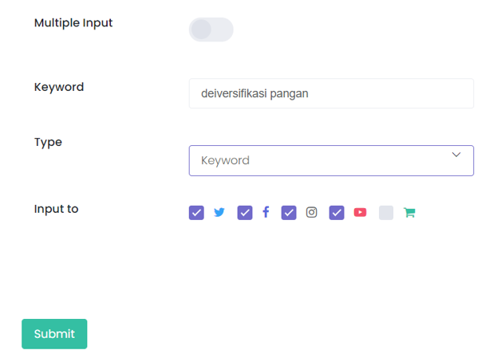
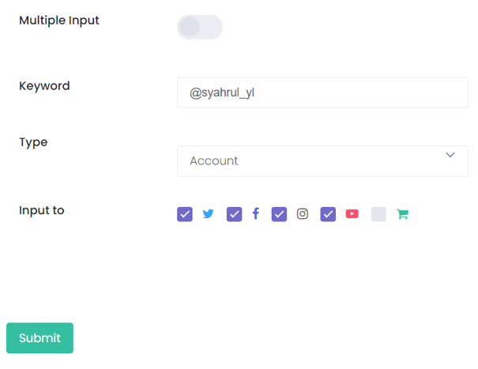
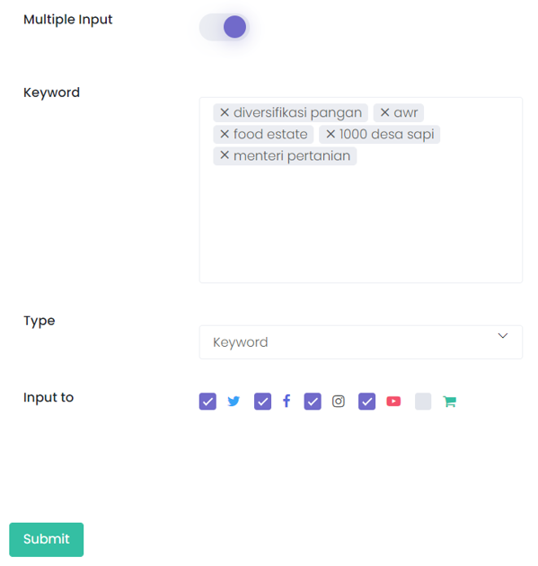
-
Search dan Filter
Fitur search dan filter dapat digunakan untuk pencarian topic/keyword.
-
Actions
Dalam manajemen topic/keyword, ada dua fitur yang dapat digunakan dalam pengaturan yaitu melakukan edit topic/keyword dan menghapus list topic/keyword existing.
-
Refinement Features
-
Pagination
-
Melihat tampilan data dengan beralih ke page selanjutnya. Berada pada sisi kiri bagian bawah.
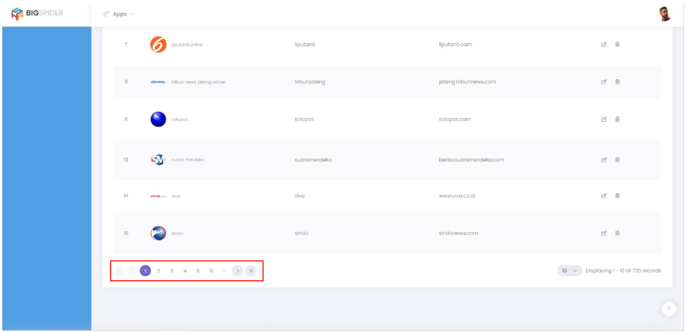
-
Tampilan pagination
-
Auto Scroll Up
-
Scrolling secara otomatis ke posisi atas dengan mengklik button arrow yang berada pada sisi kanan bagian bawah.
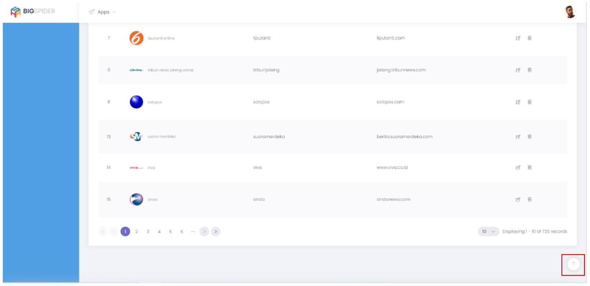
-
Tampilan auto scroll up
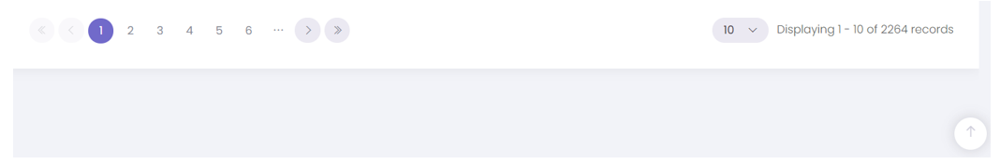
-
Merubah Displaying
-
Menampilkan jumlah data yang akan ditampilkan dengan mengklik button angka displaying.
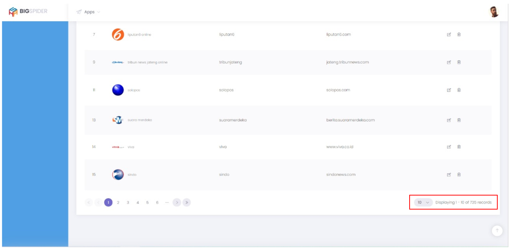
-
Tampilan displaying
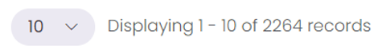